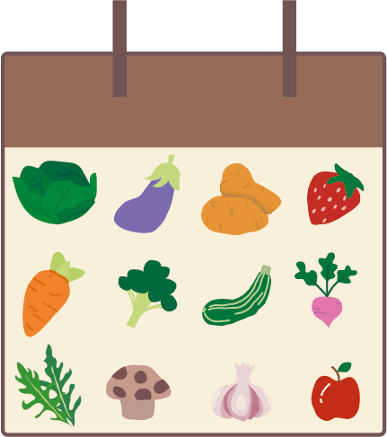

Wil jij groene vingers krijgen? Dan ben je hier op de juiste plek. Welkom bij Smoes. Ontdek tips en tricks om zo de beste moestuiner te worden, leer welke planten goed bij elkaar passen en maak je eigen moestuin bij jou thuis. Of je nu wilt beginnen met een moestuin maken of je moestuin wilt verbeteren, Smoes staat klaar om je te helpen!
home
Kalender
Wil je weten wanneer je je zaadjes moet planten of welk groenten en fruit je het beste in de maand kan eten? Klik dan
Stappenplan
Wil je een moestuin starten maar weet je niet hoe? Dat leggen we je uit met dit stappenplan. PS. er zitten ook nog handige tips bij om je moestuin te verbeteren. klik